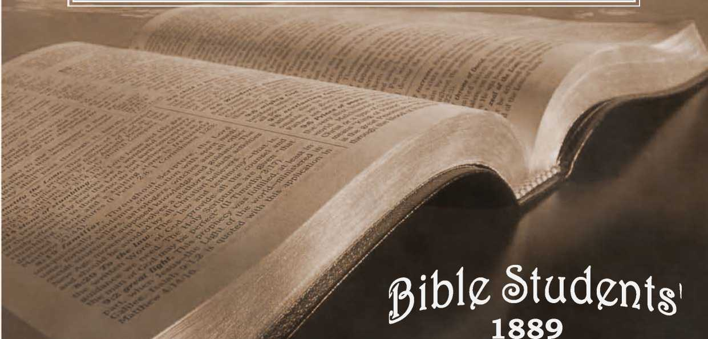

No. 1—Do the Scriptures Teach That Eternal Torment Is the Wages of Sin?
SAMPLE COPY. Box..................
®---------------------------:----
DO THE SCRIPTURES TEACH
1 ; L
THAT ■
IS .
" Inquire for the old fiths?' Jer. b : eb.
STUDER v 1889. TRACTS. /
a—-...........------------------------—--@
APRIL, /88g.
Entered as Second-Class Mail Matter, at the Post Office, Allegheny, Pa.
FOR THE PROMOTION OF
CHRISTIAN KNOWLEDGE.
QUARTERLY, SIX CENTS A YEAR J SAMPLE, FREE.
NO. I. THE WAGES OF SIN.
NO. 2. CALAMITIES.—WHY GOD PERMITS THEM.
NO. 3. PROTESTANTS, AWAKE !
NO. 4. DR. TALMAGE'S VIEW OF THE MILLENNIUM.
NO. 5. BIBLE STUDY AND STUDENTS' HELPS.
NO. 6. THE HOPE OF THE GROANING CREATION.
no. 7. the wonderful story.—Poem, 156 verses.
NO. 9. SWEDISH TRANSLATION OF TRACT NO. I.
NO. IO. A BASIS FOR TRUE CHRISTIAN UNION.
NO. 12. WHY EVIL WAS PERMITTED.
NO. 13. NORWEGIAN TRANSLATION OF TRACT NO. I.
NO. 14. A DARK CLOUD AND ITS SILVER LINING.
NO. 15. A REPLY TO ROBERT INGERSOLL.
NO. 17. PURGATORY.
SPECIAL ISSUES—LEATHERETTE-BOUND.
NO. 8. THE WONDERFUL STORY, ILLUSTRATED, 60 PAGES.
NO. II. TABERNACLE SHADOWS OF BETTER SACRIFICES, ILL. NO. 16. REPLY TO ROBERT INGERSOLL—44 PAGES.
Extra Copies of these special issues are supplied to all regular subscribers at io cents each. Colporteurs are authorized to sell these special issues at three for 50 cents.
PUBLISHED BY THE
TOWER BIBLE & TRACT SOCIETY,
BIBLE HOUSE, ALLEGHENY, PA.
*** We specially commend, both to honest skeptics and to saints, “ The Plan of the Ages.” No book of its size, known tojus, so fully unfolds the divine plan revealed in the Scriptures. It is a veritable “ Bible Key,” and is well described as “A Helping Hand for Bible Students.” We can supply it by mail, cloth bound, for Si .00, or in paper covers for 25 cents ; or we will loan it to the poor, who will promise a careful reading and to pay return postage.
THE WAGES OF SIN.
“The wages of sin is death. ” “By one man sin entered into the world, and death by [as a consequence of] sin.’’—Rom. 6 : 23 ; 5 ; 12.
The teaching of “ Orthodoxy,” that the wages of sin is everlasting torment, is emphatically contradicted by the above words of inspiration, and by many others, direct and indirect, which might be cited. How reasonable is the Bible statement, and how absurd the common view, which is founded neither in reason nor in the Scriptures, and which is in most violent antagonism to the plan and character of God, as presented in his Word. ’
The eternal torment theory had a heathen origin, though as held by the heathen it was not the merciless doctrine it afterward became, when it began gradually « <3) to attach itself to nominal Christianity during ics blending with heathen philosophies in the second century. It remained for the great apostasy to tack to heathen philosophy the horrid details now so generally believed, to paint them upon the church walls, as was done in Europe, to write them in their creeds and hymns, and to so pervert the Word of God as to give a seeming divine support to the God-dishonoring blasphemy. The credulity of the present day, therefore, receives it as a legacy, not from the Lord, or the apostles, or the prophets, but from the compromising spirit which sacrificed truth and reason, and shamefully perverted the doctrines of Christianity, in an unholy ambition and strife for power and wealth and numbers. Eternal torment as the penalty for sin was unknown to the patriarchs of past ages; it was unknown to the prophets of the Jewish age; and it was unknown to the Lord and the apostles; but it has been the chief doctrine of Nominal Christianity since the great apostasy-— the scourge wherewith the credulous, ignorant and superstitious of the world have been lashed into servile obedience to tyranny. Eternal torment was pronounced against all who offered resistance to or spurned Rome’s authority, and its infliction in the present life was begun so far as she had power; and the pains of purgatory she promised, in such measure as she should dictate, to any of her votaries who showed the slightest disposition to be refractory. Under the terrible bondage of a superstitious reverence for self-exalted fellow-men, in dense ignorance of God’s real plan, and tormented with a wretched fear of eternal misery, the masses of men resigned both their reason and the Word of God; and even yet, under the increasing light and liberty of this nineteenth century, men scarcely dare to think foi themselves on religion and the Bible.
WHAT SAITH THE SCRIPTURES ?
Let God’s inspired writers be heard in opposition to heathenized church tradh tio.ns, and let reason judge which is the sensible and God-like view, and which the unreasonable and devilish. The prophets of the Old Testament do not mention a word about eternal torment, but they do repeatedly mention destruction as the sinners’ doom, and declare over and over again that the enemies of the Lord shall perish. The Law given to Israel through Moses never hinted at any other penalty than death, in case of its violation. The warning of Adam when placed on trial in Eden contained not the remotest suggestion of eternal torture in case of failure and disobedience; but, on the contrary, it clearly stated that the penalty would be death,—“ In the day that thou eatest thereof, dying, thou shalt die.”—Gen. 2: 17, margin.
Surely, if the penalty of disobedience and failure is everlasting life in torment, an inexcusable wrong was done to Adam, and to the patriarchs, and to the Jewish people, when they were misinformed on the subject, and told that death is the penalty. Surely Adam, the ■ patriarchs, or the Jews, were they ever to find themselves in eternal torriient, where the various sectarian creeds shamelessly and falsely assert that the vast majority will find themselves, would have sufficient ground for an appeal for justice. Such, no less than the heathen billions who died without knowledge, and hence surely without faith, would have just ground for cursing the injustice of such a penalty, as a most atrocious misuse of power—first, in bringing them into a trial subject to such an awful and unreasonable penalty, without their consent; and secondly, for leaving the one class wholly ignorant of such a penalty, and for deceiving the others by telling them that the penalty of sin would be death,—to perish. It must be admitted that the presumption to declare that death, destruction, perish, and similar terms, mean Z^in torment, belongs to word-twisting theologians since the days of the apostles.
.Look next at the New Testament writings: Paul says he did not shun to declare the whole counsel of God (Acts 20 : 27), and yet he did not write a word about eternal torment. Neither did Peter, nor James, nor Jude, nor John; though it is claimed that John did, in the symbolic figures of Revelation. But since those who make this claim consider the Book of Revelation a sealed book, which they do not and cannot understand, they have no right to interpret any portion of it literally, in violation of its stated symbolic character, and in direct opposition to the remainder of the Bible, including John’s plain non-symbolic epistles.
Since the apostles do not so much as mention eternal'torment, all truth-seekers, especially Christians, should be interested to search what they do teach concerning the penalty of sin,-—remembering that they, and not the apostate church of the darker ages, taught “the whole counsel of God.”
Paul states the matter thus: “ The wages of sin is death;" the disobedient “shall be punished with everlasting destruction from the presence' of the Lord, and from the glory of his power;’’ and “many walk who are the enemies- of the cross of Christ, whose end is destruction.”—Rom. 6: 23; 2 Thes. 1:9; Phil. 3: 19.
John says: “The world passeth away and the lust thereof; but he that doeth the will of God abideth forever. ... He that committeth sin is of the devil, for the devil sinneth from the beginning. For this purpose the Son of God was manifested that he might destroy the works of the devil. . . . He that loveth not his brother abideth in death. Whosoever hateth his brother is a murderer, and we know that no murderer hath eternal life abiding in him. . . . He that hath the Son hath life ; and he that hath not the Son of God hath not life.”—1 John 2 : 17; 3; 8, 14, 15; 5 ■ I2-
Peter says: The disobedient “shall be lestroyed from among the people f that evil doers “bring upon themselves swift destruction;” and that the Lord is “not desiring that any should perish, but that
IO
all should come to repentance.”—Acts 3: 23; 2 Pet. 2 : 1 and 3 : 9.
Janies says: “Sin, when it is finished, bringeth forth death.” “There is one law-giver who is able to save and to de* stray.”-—'Jas. 1: 15; 4: 12.
THE REAL PENALTY SEVERE BUT JUST.
No one who has studied the subject can consider the penalty of sin, as Scriptur-ally set forth and defined, too slight a punishment. When understood, it is seen to be neither too slight, nor too severe, but simply a Just recompense of reward. “The gift of God,” says the apostle, “ is eternal life.” And that gift or favor bestowed upon Adam, and through him upon his posterity, was to be lasting only on condition of its proper use, which was to glorify God in its well-being and welldoing, and not to dishonor him by rebellion and sin. And when God creates, he reserves to himself both the right and the power to destroy that which he considers unworthy of continuous life. When men sinned, therefore, God simply withdrew the favor he had granted, which had been misused, and death (destruction) followed : preceded naturally by the dying process—pain, sickness, and mental, moral and physical decay.
Had God not provided redemption through Christ, the death penalty which came upon our race in Adam would have been everlasting ; but in mercy all have been redeemed from death. Yet all are again, individually, put under the same law, which changes not,—“ The wages of sin is death, but the gift of God is eternal life through Jesus Christ our Lord.”
Did our Lord Jesus ever use the expression, eternal torment? or even once hint that he came into the world to save men from eternal torment? No, never! Yet, if this were the truth, and if they were in danger of a penalty so terrible for not receiving him, it would have been neither just nor kind in him, to have kept back a truth so important. He did tell them, however, that he came to save them from death, from perishing. Death, the penalty of sin, being against all, none could hope for a resurrection to any future life, but all were hopelessly perishing, unless Christ should redeem and restore them from death, to that which was lost in Adam,—to righteousness and its privileges of everlasting life and favor. The Lord’s title, Savior, has a weight, too, in this examination. It does not imply a deliverer or savior from torment, but a savior from death. The Lord and the apostles used the language of the Samaritans, and in that tongue the word for Savior signifies Life-giver.
What did our Lord say of his mission ? we may well inquire. He said that he came “to preach deliverance to the captives.” What captives could he refer to but the'captives of sin, receiving daily its wages—dying by inches and entering the great prison-house, the tomb? He said he came to “open the prison-doors”— what prison, but the tomb ? of which also the prophet had spoken. (See Isa. 61: i;
Luke 4: 18.) He declared that he came that mankind “might have life-'' that he came “ to give his life a ransom for many" lives—in order that by believing in him men “ should not perish, but have eternal * life f and again, “Narrow is the way that leadeth unto life," and “ broad is the way that leadeth to destruction."—John 10: 10; Matt. 20: 28; John 3: 15; Matt. 7 : 13.
AN UNANSWERABLE ARGUMENT. .
It will generally be admitted by Christians that our Lord Jesus redeemed mankind by his death; that he endured willingly the penalty of man’s sins, in order that man might be released from that penalty. “ Surely he hath borne our griefs and carried our sorrows.” “ He was wounded for our transgressions; he was bruised for our iniquities; the chastisement for our peace was upon him; and by his stripes we are healed.” (Isa. 53 : 4, 5.) This being admitted, it becomes an easy matter to decide, to an absolute, unquestionable certainty, what the penalty
of our sins was, if we know what our Lord Jesus did endure when “ the chastisement for our peace ” was inflicted upon his willing head. Is he suffering eternal * torment for us ? If so, that would thus be proved to be the penalty against our sins.
But no one claims this, and the Scriptures teach that our Lord is now in glory, and not in torment, which is incontrovertible proof that the wages of sin is not torment. But what did our Lord do to secure the cancellation of our sins? What did he give when he paid our ransom price—the price or penalty against sinners ? Let the Scriptures answer. They repeatedly and explicitly declare that Christ died for our sins; that he gave his life a ransom to secure life for the condemned sinners; that he bought us with his own precious blood ; that for this purpose the Son of God was manifested in flesh; that his flesh he might give for the life, of the world; that as by man came death, by man (“ the man Christ Jesus ”) might come the resurrection of the dead.—i Cor. 15 : 3; Matt.
2o; 28; i Tiro. 2 : 5, 6; Hos. 13 : 14; 1 Cor 6; 20 ; 1 Pet. 1 : 18, 19; i John 3: 8, John 6:51; t Cor. 15:2 j.
Is there room to question further the clear Bible doctrine that “the wages of sin is death ?” Is there room to doubt further either the unscripturalness or the unreasonableness of the heathenish dogma of eternal torment? We answer, No! Let the God-dishonoring, saint-perplexing, scoffer-making, and wholly absurd blasphemy go - - back to its vile and worthy source, the devil. .
OBJECTIONS BRIEFLY CONSIDERED.
Limited space will permit merely a glance at certain of our Lord’s parables and dark sayings, which, with the popular idea of torment firmly entrenched in the mind from childhood, appear to many to support that doctrine. We will, however, briefly notice two of these, generally considered impregnable—the parable of the sheep and the goats, Matt. 25:4-46, and the parable of the rich man and Lazarus, Luke i6; 19—31. We shall find that, properly interpreted, they teach nothing of the kind.
Not to enter into details—the parable of the sheep and the goats describes a trial of the world of mankind in the coming Millennial age— “ When the Son of man shall sit upon the throne of his glory.” The separating work will be according to character, and will require all of that period of a thousand years. Verses 41 and 46, which give expression co the final sentence upon all the lovers of unrighteousness, the goats, are the points upon which the interest of our topic centers.
Verse 41 reads, “Depart from me, accursed ones, into lasting fire, prepared for the devil and his messengers” (servants). We must infer that the fire here is as symbolic as the goats which go into it. As goats fitly represent wayward and unrighteous men, so fire fitly represents destruction. Fire is always destructive, never preservative. The goats cast into a fire would be consumed, destroyed, if the fire did not too soon become extinct. And hence in the parable, in order to show the certainty and completeness of the destruction of the finally incorrigible, the symbolic goats are represented as being cast into a lasting fire, i. e., a lasting or perpetual destruction—extinction.
Verse 46 reads, “And these shall go away into everlasting punishment.” We are not questioning that the unrighteous are to be punished, nor that the punishment upon this class is to be everlasting ; the nature of the punishment is the question we are investigating. We have seen that the punishment or wages of sin is death, and nothing else, as clearly stated all through the Scriptures; and this parable certainly teaches nothing to the contrary. Only the prejudice of deep-seated error makes this passage even appear, to some, to teach anything to the contrary. The Greek word rendered punishment in this verse, of itself, positively indicates the kind of punishment. The original word is kolasin, whereas if torment were meant the Greek word basinos would have been used.
Kolasin, on the contrary, derived from kolazpo, signifies, .1, To cut off, as in pruning off branches from a tree; 2, To restrain, or repress. The Greeks write, “The charioteer restrains his fiery steeds;” 3, To chastise, to punish; to cutoff an individual from life or society; or even to restrain his liberties. That the first defin' tion, “ to cut off,” is the proper one in this case is evident from the antithesis of the succeeding and last clause of the verse, where life, the reward of the righteous, is put in contrast with the death, or cutting off from life, of the unrighteous.
THE PARABLE OF DIVES AND LAZARUS.
—Luke 16 : 19.—
While this is admitted to be a parable, it is generally treated as if it were a literal statement. To regard it as a literal statement involves several absurdities; for instance, that the rich man went to hades because he had enjoyed many earthly blessings and gave nothing but crumbs to Lazarus. Not a word is said about his wickedness. Again, Lazarus is blessed, not because he was good, or full of faith in God, but simply becapse he was poor and sick. If this be interpreted literally, the only lesson to be logically drawn from it is, that unless we are poor beggars full of sores,, we will never enter into future bliss; and that if now we wear any fine linen and purple, and have plenty to eat every day, we are sure of future torment.
Again, the coveted place of favor is Abraham’s bosom; and if the whole statement is literal, the bosom must be literal, and surely would not hold very many of earth’s millions of sick and poor.
But why consider absurdities ? As a parable, it is easy of interpretation. In a parable, the thing said is never the thing meant; as for instance in the parable of the wheat and tares, the Lord explained that wheat meant children of the kingdom, and tares the children of the devil; and similar classes in another parable were represented by sheep and goats. So in this parable, the rich man must represent a class, and Lazarus another class ; and the narrative applies to these classes.
The rich man represented the Jewish people, which up to and at the time of the parable “ fared sumptuously,” as the special recipients of God’s favors. As Paul said, the Jews had “much advantage every way, chiefly, because to them were committed the oracles of God ” (the Law and Prophecy). The promises to Abraham and David invested that people with royalty, as represented by the rich man’s ‘ ‘■purple. ” The typical sacrifices of the law constituted them, in a typical sense, a “holy nation,” represented by the rich man’s ‘fine linen"—symbolic of righteousness.—Rev. 19: 8.
Lazarus represented the God-fearing people of other nations, debarred, until the close of the Jewish Age, from those blessings conferred upon Israel specially. As the linen represented Israel’s justification, so the sores represented moral defilement in this class, for whose justification no sin-offering had at that time been made. They were not even typically cleansed, and had as yet no share in the rich promises of the kingdom, the “purple.” They were, on the contrary, outcasts, strangers from Israel’s favors. (Eph.
2: 11-13). As to how these ate of the “ crumbs” of divine favor which fell from Israel’s table of bounties, and how they accounted themselves as companions of “ dogs,” the Lord’s conversation with the Syro-Phoenician woman, who was one of this class, explains.—See Matt. 15 : 27.
But there came a change to both of these classes. The “rich man” (the Jewish nation) died, ceased to exist as a nation, and as the national representatives of God’s favors, when those favors were taken from them (Matt. 21 : 43) and given to some, formerly outcasts.
The “ rich man” class was cast out of favor, into trouble. And from then till now, the Jews as a people have been in torment; yet are hindered by their law prejudices (as a great gulf) from accepting of Christ. The “Lazarus” class also died, or ceased from their former condition, and were received into the favor of God. (ACts io: 28-35.) Accepting Christ, these thenceforth were received to Abraham’s bosom—esteemed the true children of believing Abraham, and the true heirs of the promise made to him.—See Gal.3:i6,29; Rom.i 1:7-9,12-25.
FORGIVABLE AND UNPARDONABLE SINS.
In the preceding pages we have briefly shown the extreme penalty for -wilful sin. Adam’s penalty, which involved his entire race, was of this sort; and only as the result of Christ’s death as our ransom from that penalty, of that wilful sin, is any forgiveness of it or subsequent sins possible.
Forgivable sins are those which result from weaknesses incurred through that one Adamic sin which Christ settled once for all. They are such as are not wilful, but are committed through ignorance or weaknesses of the flesh. God stands pledged to forgive all such sins upon our repentance, in the name and merit of Christ’s sacrifice.
Unpardonable sins, sins which cannot be forgiven, are such as are wilfully done. As the penalty of the first wilful sin was death—extinction of being—so death is the penalty of every wilful sin against full knowledge and ability to choose and to do the right. This is called Second Death, in distinction from the former or Adamic penalty, from which Christ’s ransom sacrifice will release all mankind.
The “ sin unto [second] death,” for the forgiveness of which the Apostle declares it is useless to pray (l John 5:16), is not only a wilful sin but a sin against clear knowledge; a sin for which no adequate excuse can be found. Because it is a sin against clear knowledge, or enlightenment in holiness, it is called the “sin against the Holy Spirit” (.Matt. 12:31, 32), for which there is no forgiveness.
But there are other partly-wilful sins, which are, therefore, partially unpardonable. In such the temp tations within and without (all of which are diredly or indirectly results of the fall) have a sharethe will consenting under the pressure of the temptation or because of the weakness. The Lord alone knows how to properly estimate our responsibilities and guilt in such cases. But to the true child of God there is but one proper course to take;—repentance and an appeal for mercy in the name and merit of Christ, the great sacrifice for sin. The Lord will forgive such a penitent, in the sense of restoring him to his favor; but he will be made to suffer “ stripes” (Luke 12:47, 48) for the sin, in proportion as God sees it to have been wilfully committed.
Not infrequently a conscientious person realizes that he has committed sin, and that it had some wilfulness in it. He properly feels condemned, guilty before God: realizing his own guilt, and forgetting the fountain for sin and uncleanness, opened by God for our weak, fallen race, and realizing his own guilt, he falls into a state of sadness; believing that he has committed the sin unto death. Such wander in deserts drear, until they find the cleansing fountain. Let such remember, however, that the very fads of their sorrow for sin and their desire to return to divine favor are proofs that they have not committed the sin unto death; for the Apostle declares that those who commit sin of this sort cannot be renewed unto repentance. (Heb. 6: 6.) Penitents,then, may always feel confident that their sins were in part, at least, results of the fall, and hence, not unto death but requiring forgiveness and stripes.
Such is the wonderful provision of God, through Christ, for the acceptance of every soul which, forsaking sin and the love of it, seeks righteousness and life through him who is the Way, as well as the Truth and the Life. Thus all, whether naturally stronger or weaker, have an equal opportunity to gain everlasting life as well as to gain the great prize of joint-heirship with Christ.
While the Scriptures teach that the present Gospel age is the Church’s Judgment-day or period of trial, and that the world’s Judgment-day or time of trial will be the Millennial age, it is, nevertheless, a reasonable question to ask,—To what extent will those who are not of the consecrated Church be held responsible, in the Millennial age, for their misdeeds, of cruelty, dishonesty and immorality, of the present time ? And to what extent will those of the same class then be rewarded for present efforts to live moral and benevolent lives ?
These are important questions, especially to the world; and well would it be for them if they could realize their importance, and profit thereby. They are important also to the Church, because of our interest in the world, and because of our desire to understand and teach corredtly our Father’s plans.
We have learned that the sacrifice of Christ secures for all mankind, however vile, an awakening from death, and the privilege of thereafter coming to perfection, and, if they will, of living forever. “ There shall be a resurrection of the dead, both of the just and the unjust.” (ACts 24:15.) The object of their being again brought into existence will be to giye them a favorable opportunity to secure everlasting life, on the conditions which God requires—obedience to his righteous will. We have no intimation whatever in the Scriptures that, when awakened, the moral condition of men will have changed, but we have much, in both reason and revelation, to show that as they went into death weak and depraved so they will come out of it. As there is “ no work, nor device, nor knowledge, nor wisdom in the grave” (Eccl. 9:10"), they will have learned nothing; and since they were sinners and unworthy of life and divine favor when they died, they will still be unworthy; and as they have received neither full rewards nor full punishments for the deeds of the present life, it is evident that just such a time of awakening as God has promised during the Millennium is necessary; •—for rewarding, and punishing, and giving to all mankind the opportunity for eternal life secured by Christ’s great ransom-sacrifice.
While, strictly speaking, the world is not now on trial: that is, the present is not the time for its full and complete trial, yet men are not now, nor have they ever been, entirely without light and ability, for the use of which they are accountable. In the darkest days of the world’s history, and in the deepest degradation of savage life, there has always been at least a measure of the light of conscience pointing more or less directly to righteousness and virtue. That the deeds of the present life have much to do with the future, Paul taught very clearly when, before Felix, he reasoned of justice and self-government, in view of the judgment to come, so that Felix trembled.— Adis 24:25, Diaglott translation.
At the first advent of our Lord, an increased measure of light came to men, and to that extent increased their responsibility, as he said: “ This is the condemnation, that light is come into the world, and men loved darkness rather than light, because their deeds were evil.” (John 3 :19.) For those evil deeds committed against the light possessed, whether of conscience or of revelation, men will have to give an account, and will receive, in their day of judgment, a just recompense of reward. And, likewise, to the extent of their effort to live righteously: they will receive their reward in the day of trial.—Matt. 10:42.
If men would consider what even reason discerns, that a time of reckoning, of judgment, is coming, that God will not forever permit evil to triumph, and that in some way he will punish evil-doers, it would undoubtedly save them many sorrows and chastisements in the age to come. Said the Prophet, “Woe unto them that seek deep to hide their counsel from the Lord, and their works are in the dark, and they say, Who seeth us ? and who knoweth us ?” (Isaiah 29:15.) Behold, “ The eyes of the Lord are in every place, beholding the evil and the good.” (Prov. 15 13); and “ God shall bring every work into judgment, with every secret thing, whether it be good, or whether it be evil.” (Eccl. 12:14.) He “will bring to light the hidden things of darkness, and will make manifest the counsels of the hearts.”—1 Cor. 4:5.
The age of Christ’s reign will be a time of just judgment ; and though it will be an age of golden opportunities to all, it will be a time.of severe discipline, trial and punishment to many. That the judgment will be fair and impartial, and with due consideration for the circumstances and the opportunities of each individual, is also assured—by the character of the Judge (the Christ—John 5:22; 1 Cor. 6:2), by his perfect knowledge, by his unwavering justice and goodness, by his divine power and by his great love as shown in his sacrifice to redeem men from death, that they might enjoy the privilege of this favorable, individual trial.
The varied circumstances and opportunities of men, in this and past ages, indicate that a just judgment will recognize differences in the degree of individual responsibility, which will also necessitate differences in the Lord’s future dealings with them. And this reasonable deduction we find clearly confirmed by the Scriptures. The Judge has been, and still is, taking minute cognizance of men’s adtions and words (Prov. 5:21), although they have been entirely unaware of it; and he declares that “ Every idle [“ pernicious,” injurious or malicious] word that men shall speak, they shall give account thereof in the day of judgment” (Matt. 12:36); and that even a cup of cold water, given to one of his little ones, because he is Christ’s, shall in nowise lose its reward. (Matt. 10:42.) The context shows that the “pernicious” words to which Jesus referred were words of wilful and malicious opposition spoken against manifest light. (Matt. 12:24, 31, 3’2.) He also affirmed that it would be more tolerable for Tyre, Sidon and Sodom in the day of judgment than for Chorazin, Bethsaida and Capernaum, which had misimproved greater advantages of light and opportunity.—Matt. II .-20-24.
In the very nature of things, we can see that the punishments of that age will be in proportion to past guilt. Every sin indulged, and every evil propensity cultivated, hardens the heart and makes the way back to purity and virtue more difficult. Consequently, sins wilfully indulged now, will require punishment and discipline in the age to come; and the more deeply the soul is dyed in willing sin, the more severe will be the measures required to correct it. As a wise parent would punish a wayward child, so Christ will punish the wicked for their good.
Plis punishments will always be administered in justice, tempered with mercy, and relieved by his approval and reward to those who are rightly exercised thereby. And it will only be when punishments, instructions and encouragements fail; in short, when love and mercy have done all that wisdom can approve (which is all that could be asked), that any will meet the final punishment which his case demands—the second death.
None of the world will meet that penalty until they have first had all the blessed opportunities of the age to come. And while this is true of the world, the same principle applies now to the consecrated children of God in this our judgment (trial) day. We now receive God’s favors (through faith), while the world will receive them in the next age, viz., instruction, assistance, encouragement, discipline and punishment. “ For what son is he whom the Father chasteneth not ? But if ye be without chastisement, whereof all are partakers, then are ye bastards and not sons.” Therefore, when we receive grievous chastisement, we should accept it as from a loving Father for our correction, not forgetting “ the exhortation which speaketh unto us as unto children, My son, despise not thou the chastening of the Lord, nor faint when thou art rebuked of him; for whom the Lord loveth he chasteneth, and scourgeth every son whom he receiveth.”—Heb. 12:4-13.
How just and equal are God’s ways ! Read carefully the rules of the coming age—Jer. 31:29-34 and Ezek. 18:20-32. They prove to us, beyond the possibility of a doubt, the sincerity and reality of all his professions of love to men: “ As I live, saith the Lord God, I have no pleasure in the death of the wicked; but that the wicked turn from his way and live : Turn ye, turn ye from your evil ways; for why will ye die?”—Ezek. 33:11.
All who in this life repent of sin, and, as the term repentance implies, begin and continue the work of reformation' to the best of their ability, will form character which will be a benefit to them in the age to come; when awakened in the resurrection age, they will be to that extent advanced towards perfec-(ion, and their progress will be more rapid and easy; while with others it will be more slow, tedious and difficult. This is implied in the words of our Lord (John 5 : 29, 30—Diaglott} : “ The hour is coming in the which all that are in their graves shall hear his voice, and shall come forth; they that have done good unto the resurrection of life [those whose trial is past, and who were judged worthy of life, will be raised perfeCt—the faithful of past ages to perfect human life, the overcomers of the gospel age to perfect life as divine beings], and they that have done evil, unto the resurrection of judgment.”—These are awakened to judgment—to receive a course of discipline and correction'—as the necessary means for their perfecting, or, otherwise, their condemnation to the second death.
The man who, in this life, by fraud and injustice, accumulated and hoarded great wealth, which was scattered to the winds when he was laid in the dust, will doubtless awake to lament his loss, and bewail his poverty and his utter inability under the new order of things to repeat unlawful measures to accumulate a fortune. With many it will be a severe chastisement and a bitter experience to overcome the propensities to avarice, selfishness, pride, ambition and idleness, fostered and pampered for years in the present life. Occasionally we see an illustration of this form of punishment now, when a man of great wealth suddenly loses all, and the haughty spirit of himself and family must fall.
We are told (Dan. 12:2) that some shall awake to shame and age-lasting contempt. And who can doubt that, when every secret thing is brought into judgment (Eccl. 12:14), and the dark side of many a character that now stands measurably approved among men is then made known, many a face will blush and hide itself in confusion. When the man who steals is required to refund the stolen property to its rightful owner, with the addition of twenty per cent, interest, and the man who deceives, falsely accuses or otherwise wrongs his neighbor, is required to acknowledge his crimes and so far as possible to repair damages, on peril of an eternal loss of life, will not this be retributive justice ? Note the clear statement of this in God’s typical dealings with Israel, whom he made to represent the world.—I Cor. io: II; Lev. 6: I—7. See also ‘■‘■Tabernacle Shadows” page 82.
As we are thus permitted to look into the perfect plan of God, how forcibly we are reminded of his word through the prophet Isaiah, “ Judgment also will I lay to the line, and righteousness to the plummet.” (Isa. 28: 17.) We also see the wholesome influence of such discipline. Parents, in disciplining their children, realize the imperative necessity of making their punishments proportionate to the character of the offences; and so in God’s government: great punishments following great offences are not greater than is necessary to establish justice and to effedt great moral reforms. .
Seeing that the Lord will thus equitably adjust human affairs in his own due time, we can afford to endure hardness for the present, and resist evil with good, even at the cost of present disadvantage. Therefore, “Recompense to no man evil for evil.” “ Let this mind be in you, which was also in Christ Jesus our Lord.”-—Rom. 12: 17-19; Phil. 2: 5-
The present order of things will not always continue : a time of reckoning is coming. The just Judge of all the earth says, “ Vengeance is mine, I will repayand the Apostle Peter adds, “ The Lord knoweth how to deliver the godly out of temptation, and to reserve the unjust unto the day of judgment to be punished.” (2 Pet. 2:9.) And, as we have seen, those punishments will be adapted to the nature of the offences, and the benevolent objedl in view— man’s permanent establishment in righteousness.
Other Scriptures corroborative of this view of future rewards and punishments are as follows: 2 Sam. 3 : 39; Matt. 16:27; 1 Pet. 3:12; Psa. 19:11; 91:8; Prov. U. :l8; Isa. 40:10549:4; Matt. $ : 12; 10: 41,42; Luke 6:35; Rev. 22 : 12; Rom. 14 : 11,12.
LET HONESTY AND TRUTH PREVAIL.
Having demonstrated that neither the Bible nor reason offers the slightest support to the doeftrine that eternal torment is the penalty for sin, we note the fact that the various church creeds, and confessions, and hymn-books, and theological treatises, are its only supports; and that under the increasing light of our day, and the consequent emancipation of reason, belief in this horrible, fiendish dodtrine of the dark ages is fast dying out. But alas! this is not because Christian people generally are zealous for the truth of God’s Word and for his character, and willing to destroy their grim creed-idols. Ah no! they still bow before their admitted falsities; they still pledge themselves to their defense, and spend time and money for their support, though at heart ashamed of them, and privately denying them.
The general influence of all this is, to cause the honest-hearted of the world to despise Christianity and the Bible; and to make hypocrites and semiinfidels of nominal Christians. Because the nominal church clings to this old blasphemy, and falsely presents its own error as the teaching of the Bible, the Word of God, though still nominally reverenced, is being practically repudiated. Thus the Bible, the great anchor of truth and liberty, is being cut loose from, by the very ones who, if not deceived regarding its teachings, would be held and blessed by it.
The general effect, not far distant, will be, first open infidelity, then anarchy. For much, very much of this, lukewarm Christians, both in pulpits and pews, who know or ought to know better, are responsible. Many such are willing to compromise the truth, to slander God’s character, and to stultify and deceive themselves, for the sake of peace, or ease, or present earthly advantage. And any minister, who, by uttering a word for an unpopular truth, will isk the loss of his stipend and his reputation for being “ established ” in the bog of error, is considered a bold man, even though he ignominiously withhold his name from his published protests.
If professed Christians would be honest with themselves and true to God, they would soon learn that “ their fear toward God is taught .by the precepts of men.” (Isa. 29 :13.) If all would decide to let God be true, though it should prove every man a liar (Rom. 3:4), and show all human creeds to be imperfect and misleading, there would be a great creedsmashing work done very shortly. Then the Bible would be studied and appreciated as never before; and its testimony that the wages of sin is death (ex-tincSiion), would be recognized as a “just recompense of reward.” < . . '
to assist in Bible study, with a view to getting rid , of all false traditions of men and to the full recovery of the old theology of our Lord and the apostles,
ADDRESS
TOWER BIBLE & TRACT SOCIETY, BIBLE HOUSE, ALLEGHENY, PA.
Helps for Bible Study supplied at low prices; and tradls given gratis, or books loaned, to the poor in spirit who are poor in pocket. '